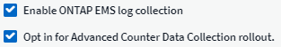

문서 변경 요청
문서 변경 요청 이 페이지 편집
이 페이지 편집 기여하는 방법 자세히 알아보기
기여하는 방법 자세히 알아보기시스템 모니터
Cloud Insights에는 메트릭 및 로그 모두에 대해 다수의 시스템 정의 모니터가 포함됩니다. 모니터 인터페이스에는 이러한 시스템 모니터를 수용하는 여러 가지 변경 사항이 포함됩니다. 이 섹션에 설명되어 있습니다.

|
시스템 모니터는 기본적으로 Paused_상태입니다. 모니터를 다시 시작하기 전에 Data Collector에서 _Advanced Counter Data Collection 및 Enable ONTAP EMS log collection_이 활성화되어 있는지 확인해야 합니다. 이러한 옵션은 _고급 구성 아래의 ONTAP 데이터 수집기에서 찾을 수 있습니다.  |
모니터 그룹
그룹화를 사용하면 관련 모니터를 보고 관리할 수 있습니다. 예를 들어 사용자 환경의 스토리지 전용 모니터 그룹을 사용하거나 특정 수신자 목록과 관련된 모니터를 사용할 수 있습니다.

그룹에 포함된 모니터 수가 그룹 이름 옆에 표시됩니다.
|
|
사용자 지정 모니터는 일시 중지, 재개, 삭제 또는 다른 그룹으로 이동할 수 있습니다. 시스템 정의 모니터는 일시 중지 및 재개할 수 있지만 삭제하거나 이동할 수는 없습니다. |
사용자 지정 모니터 그룹
새 사용자 정의 모니터 그룹을 생성하려면 * "+"새 모니터 그룹 생성 * 버튼을 클릭합니다. 그룹 이름을 입력하고 * 그룹 생성 * 을 클릭합니다. 해당 이름으로 빈 그룹이 생성됩니다.
그룹에 모니터를 추가하려면 _All Monitors_group(권장)으로 이동하여 다음 중 하나를 수행합니다.
-
단일 모니터를 추가하려면 모니터 오른쪽에 있는 메뉴를 클릭하고 _Add to Group_을 선택합니다. 모니터를 추가할 그룹을 선택합니다.
-
모니터 이름을 클릭하여 모니터의 편집 보기를 열고 Associate to a monitor group 섹션에서 그룹을 선택합니다.

그룹을 클릭하고 메뉴에서 _Remove from Group_을 선택하여 모니터를 제거합니다. 모든 모니터 또는 _Custom Monitors_그룹에서 모니터를 제거할 수 없습니다. 이러한 그룹에서 모니터를 삭제하려면 모니터 자체를 삭제해야 합니다.
|
|
그룹에서 모니터를 제거해도 Cloud Insights에서 모니터가 삭제되지는 않습니다. 모니터를 완전히 제거하려면 모니터를 선택하고 _Delete_를 클릭합니다. 또한 이 작업은 해당 그룹이 속한 그룹에서 제거되며 더 이상 모든 사용자가 사용할 수 없습니다. |
또한 _ Move to Group _ 을(를) 선택하여 같은 방식으로 모니터를 다른 그룹으로 이동할 수도 있습니다.
그룹의 모든 모니터를 한 번에 일시 중지하거나 다시 시작하려면 해당 그룹의 메뉴를 선택하고 _Pause_or_Resume_을 클릭합니다.
동일한 메뉴를 사용하여 그룹의 이름을 바꾸거나 그룹을 삭제합니다. 그룹을 삭제해도 Cloud Insights에서 모니터가 삭제되지는 않으며, _ALL Monitors_에서 계속 사용할 수 있습니다.

모니터 설명
시스템 정의 모니터는 사전 정의된 메트릭 및 조건과 기본 설명 및 수정 작업으로 구성되어 있으며 수정할 수 없습니다. 시스템 정의 모니터의 알림 수신자 목록을 수정할 수 있습니다. 메트릭, 조건, 설명 및 수정 조치를 보거나 수신자 목록을 수정하려면 시스템 정의 모니터 그룹을 열고 목록에서 모니터 이름을 클릭합니다.
시스템 정의 모니터 그룹은 수정하거나 제거할 수 없습니다.
다음 시스템 정의 모니터를 표시된 그룹에서 사용할 수 있습니다.
-
* ONTAP 인프라 * 에는 ONTAP 클러스터의 인프라 관련 문제에 대한 모니터가 포함됩니다.
-
* ONTAP 워크로드 예시 * 에는 워크로드 관련 문제에 대한 모니터가 포함됩니다.
-
두 그룹의 모니터는 기본적으로 _Paused_state입니다.
다음은 현재 Cloud Insights에 포함된 시스템 모니터입니다.
메트릭 모니터
모니터 이름 |
심각도입니다 |
설명 |
수정 조치 |
Fibre Channel 포트 높은 사용률 |
심각 |
Fibre Channel 프로토콜 포트는 고객 호스트 시스템과 ONTAP LUN 간의 SAN 트래픽을 수신하고 전송하는 데 사용됩니다. 포트 사용률이 높으면 병목 현상이 발생하고 Fibre Channel Protocol 워크로드에 민감한 성능에 영향을 주게 됩니다. 경고 알림은 네트워크 트래픽의 균형을 맞추기 위해 계획된 조치를 취해야 함을 나타냅니다. 긴급 경고는 서비스 중단이 임박했음을 나타내며, 서비스 연속성을 보장하기 위해 네트워크 트래픽의 균형을 조정하기 위해 긴급 조치를 취해야 합니다. |
중요 임계값이 위반될 경우 서비스 중단을 최소화하기 위해 즉각적인 조치가 필요합니다. 1. 사용률이 낮은 다른 FCP 포트 2로 워크로드를 이동합니다. 특정 LUN의 트래픽을 ONTAP의 QoS 정책 또는 호스트 측 구성을 통해서만 필수적인 작업으로 제한하여 FCP 포트의 사용률을 줄이십시오. 경고 임계값이 위반될 경우 즉시 다음 조치를 취하도록 계획하십시오. 1. 포트 활용률이 더 많은 포트 2 에 분산되도록 데이터 트래픽을 처리하도록 더 많은 FCP 포트를 구성하는 것이 좋습니다. 사용률이 낮은 다른 FCP 포트 3으로 워크로드를 이동합니다. 특정 LUN의 트래픽을 ONTAP의 QoS 정책 또는 호스트 측 구성을 통해서만 필수적인 작업으로 제한하여 FCP 포트의 사용률을 줄이십시오 |
LUN 높은 지연 시간 |
심각 |
LUN은 데이터베이스와 같이 성능에 민감한 애플리케이션에서 주로 발생하는 IO 트래픽을 처리하는 객체입니다. LUN 지연 시간이 길다는 것은 애플리케이션 자체에서 문제를 겪고 있으며 작업을 수행할 수 없음을 의미합니다. 경고 알림은 LUN을 적절한 노드 또는 Aggregate로 이동하기 위해 계획된 작업을 수행해야 함을 나타냅니다. 긴급 경고는 서비스 중단이 임박했음을 나타내며, 서비스 연속성을 보장하기 위해 긴급 조치를 취해야 합니다. 다음은 미디어 유형-SSD에서 최대 1-2밀리초, SAS에서 최대 8-10밀리초, SATA HDD에서 17-20밀리초를 기준으로 한 예상 지연 시간 입니다 |
중요 임계값이 위반될 경우 서비스 중단을 최소화하기 위해 즉각적인 조치가 필요합니다. 1. LUN 또는 해당 볼륨에 연결된 QoS 정책이 있는 경우 임계값 제한을 평가하고 LUN 워크로드의 제한이 조정되는지 확인합니다. 경고 임계값이 위반될 경우 즉시 다음 조치를 취하도록 계획하십시오. 1. 애그리게이트에도 높은 사용률이 발생하는 경우 LUN을 다른 애그리게이트로 이동합니다. 2. 노드의 사용률도 높은 경우 볼륨을 다른 노드로 이동하거나 노드 3의 총 워크로드를 줄입니다. LUN 또는 해당 볼륨에 연결된 QoS 정책이 있는 경우 해당 임계값 제한을 평가하고 LUN 워크로드의 제한이 조정되는지 확인합니다 |
네트워크 포트 높은 사용률 |
심각 |
네트워크 포트는 고객 호스트 시스템과 ONTAP 볼륨 간에 NFS, CIFS 및 iSCSI 프로토콜 트래픽을 수신하고 전송하는 데 사용됩니다. 포트 활용률이 높을 경우 병목 현상이 발생하고 궁극적으로 NFS, CIFS 및 iSCSI 워크로드의 성능에 영향을 줍니다. 경고 알림은 네트워크 트래픽의 균형을 맞추기 위해 계획된 조치를 취해야 함을 나타냅니다. 긴급 경고는 서비스 중단이 임박했음을 나타내며, 서비스 연속성을 보장하기 위해 네트워크 트래픽의 균형을 조정하기 위해 긴급 조치를 취해야 합니다. |
중요 임계값이 위반될 경우 서비스 중단을 최소화하기 위해 즉각적인 조치가 필요합니다. 1. 특정 볼륨의 트래픽을 ONTAP의 QoS 정책 또는 호스트측 분석을 통해서만 필수적인 작업으로 제한하여 네트워크 포트 2의 활용도를 높입니다. 사용률이 낮은 다른 네트워크 포트를 사용하도록 하나 이상의 볼륨을 구성합니다. 경고 임계값이 위반될 경우 즉시 다음 조치를 취하도록 계획하십시오. 1. 포트 사용률이 더 많은 포트 2 에 분산되도록 데이터 트래픽을 처리할 네트워크 포트를 추가로 구성하는 것이 좋습니다. 사용률이 낮은 다른 네트워크 포트를 사용하도록 하나 이상의 볼륨을 구성합니다 |
NVMe 네임스페이스 높은 지연 시간 |
심각 |
NVMe 네임스페이스는 데이터베이스와 같이 성능에 민감한 응용 프로그램에 의해 종종 발생하는 IO 트래픽을 처리하는 개체입니다. 높은 NVMe 네임스페이스 지연 시간은 응용 프로그램 자체가 어려움을 겪을 수 있으며 작업을 수행할 수 없음을 의미합니다. 경고 알림은 LUN을 적절한 노드 또는 Aggregate로 이동하기 위해 계획된 작업을 수행해야 함을 나타냅니다. 긴급 경고는 서비스 중단이 임박했음을 나타내며, 서비스 연속성을 보장하기 위해 긴급 조치를 취해야 합니다. |
중요 임계값이 위반될 경우 서비스 중단을 최소화하기 위해 즉각적인 조치가 필요합니다. 1. NVMe 네임스페이스 또는 해당 볼륨에 QoS 정책이 할당된 경우 NVMe 네임스페이스 워크로드가 제한되지 않도록 제한 임계값을 평가합니다. 경고 임계값이 위반될 경우 즉시 다음 조치를 취하도록 계획하십시오. 1. 애그리게이트에도 높은 사용률이 발생하는 경우 LUN을 다른 애그리게이트로 이동합니다. 2. 노드의 사용률도 높은 경우 볼륨을 다른 노드로 이동하거나 노드 3의 총 워크로드를 줄입니다. NVMe 네임스페이스 또는 해당 볼륨에 QoS 정책이 할당된 경우 NVMe 네임스페이스 워크로드의 제한이 발생하는 경우 해당 제한 임계값을 평가합니다 |
Qtree 용량 하드 제한입니다 |
심각 |
qtree는 논리적으로 정의된 파일 시스템으로, 볼륨 내의 루트 디렉토리에 있는 특수 하위 디렉토리로 존재할 수 있습니다. 각 qtree에는 사용자 데이터의 볼륨 증가를 제어하고 총 용량을 초과하지 않도록 데이터를 저장하는 데 사용할 수 있는 공간 할당량이 KBytes 단위로 측정됩니다. qtree는 소프트 스토리지 용량 할당량을 유지하므로, qtree의 총 용량 할당량 제한에 도달하고 데이터를 더 이상 저장할 수 없음을 사용자에게 능동적으로 알릴 수 있습니다. Qtree에 저장된 데이터의 양을 모니터링하면 사용자가 무중단 데이터 서비스를 받을 수 있습니다. |
중요 임계값이 위반될 경우 서비스 중단을 최소화하기 위해 즉각적인 조치가 필요합니다. 1. 증가량을 수용하기 위해 트리 공간 할당량을 늘리는 것을 고려하십시오. 2. 여유 공간을 확보하기 위해 더 이상 필요하지 않은 데이터가 트리에서 삭제되도록 사용자에게 지시하는 것이 좋습니다 |
qtree 용량이 가득 찼습니다 |
심각 |
qtree는 논리적으로 정의된 파일 시스템으로, 볼륨 내의 루트 디렉토리에 있는 특수 하위 디렉토리로 존재할 수 있습니다. 각 qtree에는 볼륨 용량 내에 트리에 저장되는 데이터의 양을 제한하기 위해 기본 공간 할당량 또는 할당량 정책이 정의하는 할당량이 있습니다. 경고 알림은 공간을 늘리기 위해 계획된 조치를 취해야 함을 나타냅니다. 긴급 경고는 서비스 중단이 임박했음을 나타내며, 서비스 연속성을 보장하기 위해 공간을 확보하기 위해 긴급 조치를 취해야 합니다. |
중요 임계값이 위반될 경우 서비스 중단을 최소화하기 위해 즉각적인 조치가 필요합니다. 1. 증가를 수용하기 위해 qtree의 공간을 늘리는 것을 고려하십시오 2. 공간을 확보하기 위해 더 이상 필요하지 않은 데이터 삭제를 고려합니다. 경고 임계값이 위반될 경우 즉시 다음 조치를 취하도록 계획하십시오. 1. 증가를 수용하기 위해 qtree의 공간을 늘리는 것을 고려하십시오 2. 여유 공간을 확보하기 위해 더 이상 필요하지 않은 데이터를 삭제하는 것이 좋습니다 |
Qtree 용량 소프트 제한값 |
경고 |
qtree는 논리적으로 정의된 파일 시스템으로, 볼륨 내의 루트 디렉토리에 있는 특수 하위 디렉토리로 존재할 수 있습니다. 각 qtree에는 사용자 데이터의 볼륨 증가를 제어하고 총 용량을 초과하지 않도록 데이터를 저장하는 데 사용할 수 있는 공간 할당량이 KBytes 단위로 측정됩니다. qtree는 소프트 스토리지 용량 할당량을 유지하므로, qtree의 총 용량 할당량 제한에 도달하고 데이터를 더 이상 저장할 수 없음을 사용자에게 능동적으로 알릴 수 있습니다. Qtree에 저장된 데이터의 양을 모니터링하면 사용자가 무중단 데이터 서비스를 받을 수 있습니다. |
경고 임계값이 위반될 경우 즉시 다음 조치를 취하도록 계획하십시오. 1. 증가량을 수용하기 위해 트리 공간 할당량을 늘리는 것을 고려하십시오. 2. 여유 공간을 확보하기 위해 더 이상 필요하지 않은 데이터가 트리에서 삭제되도록 사용자에게 지시하는 것이 좋습니다 |
Qtree 파일 하드 제한입니다 |
심각 |
qtree는 논리적으로 정의된 파일 시스템으로, 볼륨 내의 루트 디렉토리에 있는 특수 하위 디렉토리로 존재할 수 있습니다. 각 qtree에는 볼륨 내에서 관리할 수 있는 파일 시스템 크기를 유지하기 위해 포함할 수 있는 파일 수의 할당량이 있습니다. Qtree는 하드 파일 번호 할당량을 유지하므로 트리에 있는 새 파일이 거부됩니다. Qtree 내에서 파일 수를 모니터링하면 사용자가 무중단 데이터 서비스를 받을 수 있습니다. |
중요 임계값이 위반될 경우 서비스 중단을 최소화하기 위해 즉각적인 조치가 필요합니다. 1. qtree 2에 대한 파일 수 할당량을 늘리는 것을 고려해 보십시오. Qtree 파일 시스템에서 더 이상 사용되지 않는 파일을 삭제합니다. |
Qtree 파일 소프트 제한값 |
경고 |
qtree는 논리적으로 정의된 파일 시스템으로, 볼륨 내의 루트 디렉토리에 있는 특수 하위 디렉토리로 존재할 수 있습니다. 각 qtree에는 볼륨 내에서 관리할 수 있는 파일 시스템 크기를 유지하기 위해 포함할 수 있는 파일 수의 할당량이 있습니다. qtree에서 파일 제한에 도달하고 추가 파일을 저장할 수 없도록 하기 전에 사용자에게 사전 경고를 보내기 위해 파일 번호 할당량이 소프트 파일 번호 할당량으로 유지됩니다. Qtree 내에서 파일 수를 모니터링하면 사용자가 무중단 데이터 서비스를 받을 수 있습니다. |
경고 임계값이 위반될 경우 즉시 다음 조치를 취하도록 계획하십시오. 1. qtree 2에 대한 파일 수 할당량을 늘리는 것을 고려해 보십시오. Qtree 파일 시스템에서 더 이상 사용되지 않는 파일을 삭제합니다 |
스냅숏 예비 공간이 가득 찼습니다 |
심각 |
애플리케이션 및 고객 데이터를 저장하려면 볼륨의 스토리지 용량이 필요합니다. 스냅샷 예약 공간이라고 하는 이 공간의 일부는 데이터를 로컬로 보호할 수 있는 스냅샷을 저장하는 데 사용됩니다. ONTAP 볼륨에 새로 저장되거나 업데이트된 데이터가 많을수록 더 많은 스냅샷 용량이 사용되며 향후 새 데이터 또는 업데이트된 데이터에 더 적은 스냅샷 스토리지 용량을 사용할 수 있습니다. 볼륨 내의 스냅샷 데이터 용량이 전체 스냅숏 예비 공간에 도달하면 고객이 새 스냅숏 데이터를 저장할 수 없게 되고 볼륨의 데이터에 대한 보호 수준이 감소할 수 있습니다. 사용된 볼륨 스냅샷 용량을 모니터링하면 데이터 서비스의 연속성이 보장됩니다. |
중요 임계값이 위반될 경우 서비스 중단을 최소화하기 위해 즉각적인 조치가 필요합니다. 1. 스냅숏 예비 공간이 가득 찼을 때 볼륨의 데이터 공간을 사용하도록 스냅숏을 구성하는 것이 좋습니다. 2. 공간을 확보하기 위해 더 이상 필요하지 않을 수 있는 오래된 스냅샷을 일부 삭제하는 것을 고려하십시오. 경고 임계값이 위반될 경우 즉시 다음 조치를 취하도록 계획하십시오. 1. 증가 2 를 수용하기 위해 볼륨 내에서 스냅숏 예비 공간을 늘리는 것을 고려하십시오. 스냅숏 예비 공간이 가득 찼을 때 볼륨의 데이터 공간을 사용하도록 스냅숏을 구성하는 것이 좋습니다 |
스토리지 용량 제한 |
심각 |
스토리지 풀(애그리게이트)이 가득 차면 I/O 작업 속도가 느려지고 마지막으로 스토리지 운영 중단 사고 발생이 중지됩니다. 경고 알림은 최소 여유 공간을 복원하기 위해 계획된 작업을 곧 수행해야 함을 나타냅니다. 긴급 경고는 서비스 중단이 임박했음을 나타내며, 서비스 연속성을 보장하기 위해 공간을 확보하기 위해 긴급 조치를 취해야 합니다. |
중요 임계값이 위반될 경우 서비스 중단을 최소화하기 위해 즉각적인 조치가 필요합니다. 1. 중요하지 않은 볼륨에서 스냅샷 삭제 2. 중요하지 않은 워크로드이며 스토리지 복사본에서 복원할 수 있는 볼륨 또는 LUN을 삭제합니다. 경고 임계값이 위반될 경우 즉시 다음 조치를 취하도록 계획하십시오. 1. 하나 이상의 볼륨을 다른 스토리지 위치로 이동합니다. 2. 스토리지 용량 추가 3. 스토리지 효율성 설정을 변경하거나 비활성 데이터를 클라우드 스토리지로 계층화할 수 있습니다 |
스토리지 성능 제한 |
심각 |
스토리지 시스템의 성능 제한이 도달하면 작업이 느려지고 지연 시간이 초과되며 워크로드 및 애플리케이션이 장애를 시작할 수 있습니다. ONTAP는 작업 부하에 따른 스토리지 풀 사용률을 평가하고 사용된 성능 비율을 예측합니다. 경고 알림은 워크로드 피크를 처리하기 위해 남은 스토리지 풀 성능이 부족할 수 있으므로 스토리지 풀 로드를 줄이기 위해 계획된 작업을 수행해야 함을 나타냅니다. 중요 알림은 서비스 지속성을 보장하기 위해 스토리지 풀 로드를 줄이기 위해 성능 중단이 임박했음을 나타내며 긴급 조치를 취해야 합니다. |
중요 임계값이 위반될 경우 서비스 중단을 최소화하기 위해 즉각적인 조치가 필요합니다. 1. 스냅샷 또는 SnapMirror 복제와 같은 예약된 작업을 일시 중지합니다. 2. 유휴 비필수 워크로드… 경고 임계값이 위반될 경우 즉시 다음 조치를 취하도록 계획하십시오. 1. 하나 이상의 워크로드를 다른 스토리지 위치로 이동 2. 스토리지 노드(AFF) 또는 디스크 쉘프(FAS) 추가 및 워크로드 재배포 3. 워크로드 특성 변경(블록 크기, 애플리케이션 캐싱 등) |
사용자 할당량 용량 하드 제한입니다 |
심각 |
ONTAP는 볼륨 내의 볼륨, 파일 또는 디렉토리에 액세스할 권한이 있는 Unix 또는 Windows 시스템 사용자를 인식합니다. 따라서 ONTAP를 통해 고객은 Linux 또는 Windows 시스템의 사용자 또는 사용자 그룹에 대한 스토리지 용량을 구성할 수 있습니다. 사용자 또는 그룹 정책 할당량은 사용자가 자신의 데이터에 사용할 수 있는 공간의 양을 제한합니다. 이 할당량의 하드 제한에서는 볼륨 내에서 사용된 용량이 전체 용량 할당량에 도달하기 전에 올바른 용량인지 사용자에게 알릴 수 있습니다. 사용자 또는 그룹 할당량 내에 저장된 데이터의 양을 모니터링하면 사용자가 중단 없는 데이터 서비스를 받을 수 있습니다. |
중요 임계값이 위반될 경우 서비스 중단을 최소화하기 위해 즉각적인 조치가 필요합니다. 1. 확장을 수용하기 위해 사용자 또는 그룹 할당량의 공간을 늘리는 것을 고려하십시오. 2. 사용자 또는 그룹에 여유 공간을 확보하기 위해 더 이상 필요하지 않은 데이터를 삭제하도록 지시하는 것이 좋습니다. |
사용자 할당량 용량 소프트 제한입니다 |
경고 |
ONTAP는 볼륨 내의 볼륨, 파일 또는 디렉토리에 액세스할 권한이 있는 Unix 또는 Windows 시스템 사용자를 인식합니다. 따라서 ONTAP를 통해 고객은 Linux 또는 Windows 시스템의 사용자 또는 사용자 그룹에 대한 스토리지 용량을 구성할 수 있습니다. 사용자 또는 그룹 정책 할당량은 사용자가 자신의 데이터에 사용할 수 있는 공간의 양을 제한합니다. 이 할당량의 소프트 제한값을 사용하면 볼륨 내에서 사용된 용량이 총 용량 할당량에 도달할 때 사용자에게 사전 알림을 보낼 수 있습니다. 사용자 또는 그룹 할당량 내에 저장된 데이터의 양을 모니터링하면 사용자가 중단 없는 데이터 서비스를 받을 수 있습니다. |
경고 임계값이 위반될 경우 즉시 다음 조치를 취하도록 계획하십시오. 1. 확장을 수용하기 위해 사용자 또는 그룹 할당량의 공간을 늘리는 것을 고려하십시오. 2. 여유 공간을 확보하기 위해 더 이상 필요하지 않은 데이터를 삭제하는 것이 좋습니다. |
볼륨 용량이 가득 찼습니다 |
심각 |
애플리케이션 및 고객 데이터를 저장하려면 볼륨의 스토리지 용량이 필요합니다. ONTAP 볼륨에 더 많은 데이터를 저장할수록 이후 데이터에 대한 스토리지 가용성이 줄어듭니다. 볼륨 내의 데이터 스토리지 용량이 총 스토리지 용량에 도달하면 스토리지 용량 부족으로 인해 고객이 데이터를 저장할 수 없게 될 수 있습니다. 사용된 볼륨 스토리지 용량을 모니터링하면 데이터 서비스의 연속성이 보장됩니다. |
중요 임계값이 위반될 경우 서비스 중단을 최소화하기 위해 즉각적인 조치가 필요합니다. 1. 증가량을 수용하기 위해 볼륨의 공간을 늘리는 것을 고려하십시오 2. 공간을 확보하기 위해 더 이상 필요하지 않은 데이터 삭제를 고려합니다. 경고 임계값이 위반될 경우 즉시 다음 조치를 취하도록 계획하십시오. 1. 성장을 수용하기 위해 볼륨의 공간을 늘리는 것을 고려하십시오 |
볼륨 높은 지연 시간 |
심각 |
볼륨은 DevOps 애플리케이션, 홈 디렉토리, 데이터베이스를 비롯하여 성능에 민감한 애플리케이션에서 주로 발생하는 IO 트래픽을 처리하는 객체입니다. 볼륨 지연 시간이 길다는 것은 애플리케이션 자체에서 문제를 겪고 있으며 작업을 수행할 수 없음을 의미합니다. 볼륨 지연 시간을 모니터링하는 것은 애플리케이션의 일관된 성능을 유지하는 데 매우 중요합니다. 다음은 미디어 유형-SSD에서 최대 1-2밀리초, SAS에서 최대 8-10밀리초, SATA HDD에서 17-20밀리초를 기준으로 한 예상 지연 시간 입니다. |
중요 임계값이 위반될 경우 서비스 중단을 최소화하기 위해 즉각적인 조치가 필요합니다. 1. 볼륨에 QoS 정책이 할당된 경우 볼륨 워크로드의 제한이 발생하는 경우 해당 제한 임계값을 평가합니다. 경고 임계값이 위반될 경우 즉시 다음 조치를 취하도록 계획하십시오. 1. 애그리게이트에도 높은 사용률이 발생하는 경우 볼륨을 다른 애그리게이트로 이동합니다. 볼륨에 QoS 정책이 할당된 경우 볼륨 워크로드의 제한이 발생하는 경우 해당 제한 임계값을 평가합니다. 3.노드 사용률도 높을 경우 볼륨을 다른 노드로 이동하거나 노드의 총 워크로드를 줄입니다 |
볼륨 inode 제한 |
심각 |
파일을 저장하는 볼륨은 인덱스 노드(inode)를 사용하여 파일 메타데이터를 저장합니다. 볼륨이 inode 할당을 처리할 때 더 이상 파일을 추가할 수 없습니다. 경고 알림은 사용 가능한 inode 수를 늘리기 위해 계획된 작업을 수행해야 함을 나타냅니다. 위험 경고는 파일 제한 소진이 임박했음을 나타내며, 서비스 연속성을 보장하기 위해 inode를 확보하기 위해 긴급 조치를 취해야 합니다. |
중요 임계값이 위반될 경우 서비스 중단을 최소화하기 위해 즉각적인 조치가 필요합니다. 1. 볼륨에 대한 inode 값을 늘리는 것을 고려하십시오. inode 값이 이미 최대값에 있는 경우 파일 시스템이 최대 크기 2를 초과하여 확장되었기 때문에 볼륨을 두 개 이상의 볼륨으로 분할하는 것이 좋습니다. 대규모 파일 시스템을 수용하는 데 도움이 되는 FlexGroup 사용을 고려해 보십시오. 경고 임계값이 위반될 경우 즉시 다음 조치를 취하도록 계획하십시오. 1. 볼륨에 대한 inode 값을 늘리는 것을 고려하십시오. inode 값이 이미 최대값에 있는 경우 파일 시스템이 최대 크기 2를 초과하여 확장되었기 때문에 볼륨을 두 개 이상의 볼륨으로 분할하는 것이 좋습니다. 대규모 파일 시스템을 수용하는 데 도움이 되는 FlexGroup 사용을 고려해 보십시오 |
모니터 이름 |
CI 심각도 |
모니터 설명 |
수정 조치 |
노드 높은 지연 시간 |
경고/위험 |
노드 지연 시간이 노드의 애플리케이션 성능에 영향을 줄 수 있는 수준에 도달했습니다. 노드 지연 시간이 짧아 애플리케이션의 일관된 성능을 보장할 수 있습니다. 미디어 유형에 따른 예상 지연 시간은 SSD 최대 1-2밀리초, SAS 최대 8-10밀리초, SATA HDD 17-20 밀리초입니다. |
중요 임계값이 위반되면 서비스 중단을 최소화하기 위해 즉각적인 조치를 취해야 합니다. 1. 예약된 작업, 스냅샷 또는 SnapMirror 복제를 일시 중지합니다. 2. QoS 제한을 통해 낮은 우선 순위 워크로드의 요구 감소 3. 중요하지 않은 워크로드를 비활성화할 경우 경고 임계값이 위반될 때 즉시 조치를 고려합니다. 1. 하나 이상의 워크로드를 다른 스토리지 위치로 이동 2. QoS 제한을 통해 낮은 우선 순위 워크로드의 요구 감소 3. 스토리지 노드(AFF) 또는 디스크 쉘프(FAS) 추가 및 워크로드 재배포 4. 워크로드 특성 변경(블록 크기, 애플리케이션 캐싱 등) |
노드 성능 제한 |
경고/위험 |
노드 성능 활용률은 입출력 및 노드에서 지원하는 애플리케이션의 성능에 영향을 줄 수 있는 수준에 도달했습니다. 낮은 노드 성능 활용으로 애플리케이션의 일관된 성능을 보장합니다. |
중요 임계값이 위반될 경우 서비스 중단을 최소화하기 위해 즉각적인 조치를 취해야 합니다. 1. 예약된 작업, 스냅샷 또는 SnapMirror 복제를 일시 중지합니다. 2. QoS 제한을 통해 낮은 우선 순위 워크로드의 요구 감소 3. 중요하지 않은 워크로드를 사용하지 않는 경우 경고 임계값이 위반될 경우 다음 작업을 고려하십시오. 1. 하나 이상의 워크로드를 다른 스토리지 위치로 이동 2. QoS 제한을 통해 낮은 우선 순위 워크로드의 요구 감소 3. 스토리지 노드(AFF) 또는 디스크 쉘프(FAS) 추가 및 워크로드 재배포 4. 워크로드 특성 변경(블록 크기, 애플리케이션 캐싱 등) |
스토리지 VM 높은 지연 시간 |
경고/위험 |
스토리지 VM(SVM)의 지연 시간이 스토리지 VM의 애플리케이션 성능에 영향을 줄 수 있는 수준에 도달했습니다. 스토리지 VM 지연 시간이 짧아 애플리케이션의 일관된 성능이 보장됩니다. 미디어 유형에 따른 예상 지연 시간은 SSD 최대 1-2밀리초, SAS 최대 8-10밀리초, SATA HDD 17-20 밀리초입니다. |
중요 임계값이 위반되면 QoS 정책이 할당된 스토리지 VM의 볼륨에 대한 임계값 제한을 즉시 평가하여 볼륨 워크로드가 조절되는지 확인합니다. 경고 임계값이 위반되면 즉시 다음 작업을 고려하십시오. 1. 애그리게이트에도 높은 사용률이 발생하는 경우 스토리지 VM의 일부 볼륨을 다른 애그리게이트로 이동합니다. QoS 정책이 할당된 스토리지 VM의 볼륨에 대해 볼륨 워크로드가 조절되는 경우 임계값 제한을 평가합니다 3. 노드에 높은 사용률이 발생한 경우 스토리지 VM의 일부 볼륨을 다른 노드로 이동하거나 노드의 총 워크로드를 줄입니다 |
사용자 할당량 파일 하드 제한입니다 |
심각 |
볼륨 내에서 생성된 파일 수가 중요 한도에 도달했으며 추가 파일을 생성할 수 없습니다. 저장된 파일 수를 모니터링하면 사용자가 중단 없는 데이터 서비스를 받을 수 있습니다. |
중요 임계값이 위반될 경우 서비스 중단을 최소화하기 위해 즉각적인 조치가 필요합니다. 다음 조치를 고려하십시오. 1. 특정 사용자에 대한 파일 개수 할당량을 늘립니다. 2. 필요 없는 파일을 삭제하여 특정 사용자의 파일 할당량에 대한 부담을 줄입니다 |
사용자 할당량 파일 소프트 제한입니다 |
경고 |
볼륨 내에서 생성된 파일 수가 할당량의 임계값 제한에 도달했으며 심각한 한도에 근접했습니다. 할당량이 위험 제한에 도달하면 추가 파일을 생성할 수 없습니다. 사용자가 저장한 파일 수를 모니터링하면 사용자가 중단 없는 데이터 서비스를 받을 수 있습니다. |
경고 임계값이 위반될 경우 즉시 조치를 고려하십시오. 1. 특정 사용자 할당량에 대한 파일 개수 할당량을 늘립니다. 2. 필요 없는 파일을 삭제하여 특정 사용자의 파일 할당량에 대한 부담을 줄입니다 |
볼륨 캐시 비적중 비율입니다 |
경고/위험 |
볼륨 캐시 비적중 비율은 캐시에서 반환되지 않고 디스크에서 반환된 클라이언트 애플리케이션의 읽기 요청 비율입니다. 즉, 볼륨이 설정된 임계값에 도달했음을 의미합니다. |
중요 임계값이 위반되면 서비스 중단을 최소화하기 위해 즉각적인 조치를 취해야 합니다. 1. 일부 워크로드를 볼륨 노드에서 이동하여 IO 로드를 줄입니다 2. 아직 볼륨 노드에 있지 않은 경우 Flash Cache 3을 구매하여 추가하여 WAFL 캐시를 높입니다. QoS 제한을 통해 동일한 노드에서 낮은 우선 순위 워크로드의 요구를 줄입니다. 경고 임계값이 위반될 때 즉시 조치를 고려하십시오. 1. 일부 워크로드를 볼륨 노드에서 이동하여 IO 로드를 줄입니다 2. 아직 볼륨 노드에 있지 않은 경우 Flash Cache 3을 구매하여 추가하여 WAFL 캐시를 높입니다. QoS 제한을 통해 동일한 노드에서 낮은 우선 순위 워크로드의 요구를 줄입니다 4. 워크로드 특성 변경(블록 크기, 애플리케이션 캐싱 등) |
볼륨 Qtree 할당량 오버커밋 |
경고/위험 |
볼륨 Qtree 할당량 오버 커밋은 qtree 할당량에 의해 볼륨이 초과 커밋된 것으로 간주되는 비율을 지정합니다. 볼륨에 대해 qtree 할당량의 설정 임계값에 도달했습니다. 볼륨 qtree 할당량 초과 할당을 모니터링하면 사용자가 무중단 데이터 서비스를 받을 수 있습니다. |
중요 임계값이 위반되면 서비스 중단을 최소화하기 위해 즉각적인 조치를 취해야 합니다. 1. 볼륨 2 의 공간을 늘립니다. 경고 임계값이 위반되면 원치 않는 데이터를 삭제한 다음 볼륨 공간을 늘리는 것이 좋습니다. |
로그 모니터(시간 없음 - 해결됨)
모니터 이름 |
심각도입니다 |
설명 |
수정 조치 |
AWS 자격 증명이 초기화되지 않았습니다 |
정보 |
이 이벤트는 모듈이 초기화되기 전에 클라우드 자격 증명 스레드에서 AWS(Amazon Web Services) IAM(Identity and Access Management) 역할 기반 자격 증명에 액세스하려고 할 때 발생합니다. |
시스템뿐만 아니라 클라우드 자격 증명 스레드가 초기화를 완료할 때까지 기다립니다. |
클라우드 계층에 연결할 수 없습니다 |
심각 |
스토리지 노드가 클라우드 계층 오브젝트 저장소 API에 연결할 수 없습니다. 일부 데이터에 액세스할 수 없습니다. |
온프레미스 제품을 사용하는 경우 다음 수정 조치를 수행하십시오. … "network interface show" 명령을 사용하여 인터클러스터 LIF가 온라인이고 작동하는지 확인합니다. … 대상 노드 인터클러스터 LIF에 대해 "ping" 명령을 사용하여 오브젝트 저장소 서버에 대한 네트워크 연결을 확인합니다. … 다음 사항을 확인합니다. … 개체 저장소의 구성이 변경되지 않았는지 확인합니다. … 로그인 및 연결 정보는 입니다 여전히 유효합니다.… 문제가 지속되면 NetApp 기술 지원 팀에 문의하십시오. Cloud Volumes ONTAP를 사용하는 경우 다음과 같은 수정 조치를 수행하십시오. … 오브젝트 저장소 구성이 변경되지 않았는지 확인합니다. 로그인 및 연결 정보가 여전히 유효한지 확인하십시오. 문제가 지속되면 NetApp 기술 지원 팀에 문의하십시오. |
디스크 사용 중단 |
정보 |
이 이벤트는 디스크에 장애가 발생했거나, 제거 중이거나, 유지보수 센터에 진입했기 때문에 디스크가 서비스에서 제거된 경우에 발생합니다. |
없음. |
FlexGroup 구성 요소 꽉 참 |
심각 |
FlexGroup 볼륨 내의 구성요소가 가득 차면 서비스가 중단될 수 있습니다. FlexGroup 볼륨에서 파일을 생성하거나 확장할 수 있습니다. 그러나 구성요소에 저장된 파일은 수정할 수 없습니다. 결과적으로 FlexGroup 볼륨에 대해 쓰기 작업을 수행하려고 할 때 예기치 않은 공간 부족 오류가 나타날 수 있습니다. |
"volume modify -files + X" 명령을 사용하여 FlexGroup 볼륨에 용량을 추가하는 것이 좋습니다.… 또는 FlexGroup 볼륨에서 파일을 삭제합니다. 그러나 어떤 파일이 구성 요소인지 결정하기는 어렵습니다. |
FlexGroup 구성 요소 거의 가득 참 |
경고 |
FlexGroup 볼륨 내의 구성요소에 공간이 거의 부족하기 때문에 서비스가 중단될 수 있습니다. 파일을 만들고 확장할 수 있습니다. 그러나 구성 요소 공간이 부족한 경우 구성 요소에서 파일을 추가하거나 수정하지 못할 수 있습니다. |
"volume modify -files + X" 명령을 사용하여 FlexGroup 볼륨에 용량을 추가하는 것이 좋습니다.… 또는 FlexGroup 볼륨에서 파일을 삭제합니다. 그러나 어떤 파일이 구성 요소인지 결정하기는 어렵습니다. |
FlexGroup 구성 요소 inode가 거의 없습니다 |
경고 |
FlexGroup 볼륨 내의 구성요소는 inode에 거의 포함되어 있지 않습니다. 이로 인해 서비스가 중단될 수 있습니다. 구성요소에서 평균 보다 적은 생성 요청을 받습니다. 이 요청은 더 많은 inode가 있는 구성 요소에게 라우팅되므로 FlexGroup 볼륨의 전반적인 성능에 영향을 줄 수 있습니다. |
"volume modify -files + X" 명령을 사용하여 FlexGroup 볼륨에 용량을 추가하는 것이 좋습니다.… 또는 FlexGroup 볼륨에서 파일을 삭제합니다. 그러나 어떤 파일이 구성 요소인지 결정하기는 어렵습니다. |
FlexGroup 구성 요소 inode가 없습니다 |
심각 |
FlexGroup 볼륨의 구성요소에 inode가 부족하기 때문에 서비스가 중단될 수 있습니다. 이 구성요소에는 새 파일을 생성할 수 없습니다. 이로 인해 FlexGroup 볼륨 전체에 걸쳐 콘텐츠의 전체적인 균형이 맞지 않을 수 있습니다. |
"volume modify -files + X" 명령을 사용하여 FlexGroup 볼륨에 용량을 추가하는 것이 좋습니다.… 또는 FlexGroup 볼륨에서 파일을 삭제합니다. 그러나 어떤 파일이 구성 요소인지 결정하기는 어렵습니다. |
LUN을 오프라인 상태로 전환합니다 |
정보 |
이 이벤트는 LUN을 수동으로 오프라인 상태로 전환할 때 발생합니다. |
LUN을 다시 온라인 상태로 전환합니다. |
본체 팬 고장 |
경고 |
하나 이상의 메인 유니트 팬에 장애가 발생했습니다. 시스템은 계속 작동합니다. 그러나 이 상태가 너무 오래 지속되면 과열 상태가 자동 종료를 트리거할 수 있습니다. |
장애가 발생한 팬을 재장착합니다. 오류가 지속되면 교체합니다. |
주 장치 팬이 경고 상태입니다 |
정보 |
이 이벤트는 하나 이상의 메인 유니트 팬이 경고 상태에 있을 때 발생합니다. |
과열되지 않도록 표시된 팬을 교체합니다. |
NVRAM 배터리가 부족합니다 |
경고 |
NVRAM 배터리 용량이 매우 부족합니다. 배터리가 방전되면 데이터가 손실될 수 있습니다.…시스템에서 AutoSupport 또는 "Call Home" 메시지를 생성하여 NetApp 기술 지원 부서 및 구성된 대상(구성된 경우)에게 전송합니다. AutoSupport 메시지를 성공적으로 전달하면 문제 확인 및 해결이 크게 향상됩니다. |
다음 해결 조치를 수행하십시오.… "system node environment sensors show" 명령을 사용하여 배터리의 현재 상태, 용량 및 충전 상태를 확인하십시오.… 최근에 배터리를 교체했거나 시스템이 장시간 작동하지 않은 경우, 배터리를 모니터링하여 배터리가 올바르게 충전되고 있는지 확인하십시오. 배터리 작동 시간이 계속해서 중요 수준 이하로 감소하면 NetApp 기술 지원 부서에 문의하십시오. 스토리지 시스템이 자동으로 종료됩니다. |
서비스 프로세서가 구성되지 않았습니다 |
경고 |
이 이벤트는 서비스 프로세서(SP)를 구성하도록 알리기 위해 매주 발생합니다. SP는 시스템에 통합되어 원격 액세스 및 원격 관리 기능을 제공하는 물리적 디바이스입니다. SP의 전체 기능을 사용하도록 구성해야 합니다. |
"system service-processor network modify" 명령을 사용하여 SP를 구성합니다. 필요한 경우 "system service-processor network show" 명령을 사용하여 SP의 MAC 주소를 얻습니다.… "system service-processor network show" 명령을 사용하여 SP 네트워크 구성을 확인합니다.… SP가 "system service-processor AutoSupport invoke" 명령을 사용하여 AutoSupport e-메일을 보낼 수 있는지 확인합니다. 참고: 이 명령을 실행하기 전에 AutoSupport e-메일 호스트 및 수신자를 ONTAP에서 구성해야 합니다. |
서비스 프로세서가 오프라인 상태입니다 |
심각 |
모든 SP 복구 작업이 수행되더라도 ONTAP는 더 이상 서비스 프로세서(SP)로부터 하트비트를 수신하지 않습니다. ONTAP는 SP 없이는 하드웨어 상태를 모니터링할 수 없습니다.… 하드웨어 손상 및 데이터 손실을 방지하기 위해 시스템이 종료됩니다. SP가 오프라인이 될 때 즉시 알림을 받을 수 있도록 패닉 알림을 설정합니다. |
다음 작업을 수행하여 시스템 전원을 껐다가 켭니다.…섀시에서 컨트롤러를 당겨 뺍니다.…컨트롤러를 다시 밀어 넣습니다.… 컨트롤러를 다시 켭니다… 문제가 지속되면 컨트롤러 모듈을 교체합니다. |
쉘프 팬 실패 |
심각 |
표시된 냉각 팬 또는 쉘프 팬 모듈에 장애가 발생했습니다. 쉘프 내의 디스크가 냉각 공기 흐름이 충분하지 않아 디스크 장애가 발생할 수 있습니다. |
다음 수정 조치를 수행하십시오.… 팬 모듈이 완전히 장착되고 고정되었는지 확인하십시오. 참고: 일부 디스크 쉘프의 전원 공급 장치 모듈에 팬이 통합되어 있습니다.… 문제가 지속되면 팬 모듈을 교체하십시오.… 그래도 문제가 지속되면 NetApp 기술 지원 부서에 지원을 요청하십시오. |
메인 장치 팬 오류로 인해 시스템을 작동할 수 없습니다 |
심각 |
하나 이상의 메인 유니트 팬에 장애가 발생하여 시스템 작동이 중단되었습니다. 이로 인해 데이터가 손실될 수 있습니다. |
결함이 있는 팬을 교체합니다. |
할당되지 않은 디스크 |
정보 |
시스템에 할당되지 않은 디스크가 있습니다. 용량이 낭비되고 있으며 시스템의 구성 오류 또는 부분 구성 변경이 적용될 수 있습니다. |
"disk show -n" 명령을 사용하여 할당되지 않은 디스크를 확인합니다.… "disk assign" 명령을 사용하여 시스템에 디스크를 할당합니다. |
로그 모니터가 시간 기준으로 해결되었습니다
모니터 이름 |
심각도입니다 |
설명 |
수정 조치 |
바이러스 백신 서버 사용 중 |
경고 |
바이러스 백신 서버가 너무 바빠서 새 검사 요청을 수락할 수 없습니다. |
이 메시지가 자주 발생하는 경우 SVM에서 생성되는 바이러스 검사 로드를 처리할 수 있는 바이러스 백신 서버가 충분한지 확인합니다. |
IAM 역할에 대한 AWS 자격 증명이 만료되었습니다 |
심각 |
Cloud Volume ONTAP에 액세스할 수 없습니다. IAM(Identity and Access Management) 역할 기반 자격 증명이 만료되었습니다. 이 자격 증명은 AWS(Amazon Web Services) 메타데이터 서버에서 IAM 역할을 사용하여 수집되며 Amazon S3(Amazon Simple Storage Service)에 API 요청을 서명하는 데 사용됩니다. |
다음을 수행합니다….AWS EC2 관리 콘솔에 로그인합니다….인스턴스 페이지로 이동합니다….Cloud Volumes ONTAP 구축을 위한 인스턴스를 찾고 해당 상태를 확인합니다….인스턴스와 관련된 AWS IAM 역할이 유효하고 인스턴스에 대한 적절한 권한이 부여되었는지 확인합니다. |
IAM 역할에 대한 AWS 자격 증명을 찾을 수 없습니다 |
심각 |
클라우드 자격 증명 스레드는 AWS 메타데이터 서버에서 AWS(Amazon Web Services) IAM(Identity and Access Management) 역할 기반 자격 증명을 획득할 수 없습니다. 자격 증명은 Amazon S3(Amazon Simple Storage Service)에 API 요청을 서명하는 데 사용됩니다. 클라우드 볼륨 ONTAP에 액세스할 수 없습니다. |
다음을 수행합니다….AWS EC2 관리 콘솔에 로그인합니다….인스턴스 페이지로 이동합니다….Cloud Volumes ONTAP 구축을 위한 인스턴스를 찾고 해당 상태를 확인합니다….인스턴스와 관련된 AWS IAM 역할이 유효하고 인스턴스에 대한 적절한 권한이 부여되었는지 확인합니다. |
IAM 역할에 대한 AWS 자격 증명이 잘못되었습니다 |
심각 |
IAM(Identity and Access Management) 역할 기반 자격 증명이 유효하지 않습니다. 이 자격 증명은 AWS(Amazon Web Services) 메타데이터 서버에서 IAM 역할을 사용하여 수집되며 Amazon S3(Amazon Simple Storage Service)에 API 요청을 서명하는 데 사용됩니다. Cloud Volume ONTAP에 액세스할 수 없습니다. |
다음을 수행합니다….AWS EC2 관리 콘솔에 로그인합니다….인스턴스 페이지로 이동합니다….Cloud Volumes ONTAP 구축을 위한 인스턴스를 찾고 해당 상태를 확인합니다….인스턴스와 관련된 AWS IAM 역할이 유효하고 인스턴스에 대한 적절한 권한이 부여되었는지 확인합니다. |
AWS IAM 역할을 찾을 수 없습니다 |
심각 |
IAM(Identity and Access Management) 역할 스레드는 AWS 메타데이터 서버에서 AWS(Amazon Web Services) IAM 역할을 찾을 수 없습니다. IAM 역할은 Amazon S3(Amazon Simple Storage Service)에 API 요청을 서명하는 데 사용되는 역할 기반 자격 증명을 취득해야 합니다. 클라우드 볼륨 ONTAP에 액세스할 수 없습니다. |
다음을 수행합니다….AWS EC2 관리 콘솔에 로그인합니다….인스턴스 페이지로 이동합니다….Cloud Volumes ONTAP 구축을 위한 인스턴스를 찾고 해당 상태를 확인합니다….인스턴스와 관련된 AWS IAM 역할이 유효한지 확인합니다. |
AWS IAM 역할이 잘못되었습니다 |
심각 |
AWS 메타데이터 서버에서 AWS(Amazon Web Services) IAM(ID 및 액세스 관리) 역할이 잘못되었습니다. 클라우드 볼륨 ONTAP에 액세스할 수 없습니다. |
다음을 수행합니다….AWS EC2 관리 콘솔에 로그인합니다….인스턴스 페이지로 이동합니다….Cloud Volumes ONTAP 구축을 위한 인스턴스를 찾고 해당 상태를 확인합니다….인스턴스와 관련된 AWS IAM 역할이 유효하고 인스턴스에 대한 적절한 권한이 부여되었는지 확인합니다. |
AWS 메타데이터 서버 연결에 실패했습니다 |
심각 |
IAM(Identity and Access Management) 역할 스레드는 AWS(Amazon Web Services) 메타데이터 서버와 통신 링크를 설정할 수 없습니다. Amazon S3(Amazon Simple Storage Service)에 API 요청을 서명하는 데 사용되는 AWS IAM 역할 기반 자격 증명을 입수하기 위해 통신을 설정해야 합니다. 클라우드 볼륨 ONTAP에 액세스할 수 없습니다. |
다음을 수행합니다….AWS EC2 관리 콘솔에 로그인합니다….인스턴스 페이지로 이동합니다….Cloud Volumes ONTAP 구축의 인스턴스를 찾아 상태를 확인합니다. |
FabricPool 공간 사용 제한에 거의 도달했습니다 |
경고 |
용량 라이센스 공급자가 사용하는 오브젝트 저장소의 전체 클러스터 전체 FabricPool 공간 사용이 라이센스 한도에 거의 도달했습니다. |
"storage aggregate object-store show-space" 명령을 사용하여 각 FabricPool 스토리지 계층에서 사용하는 라이센스 용량의 비율을 확인합니다.… 계층화 정책 "snapshot" 또는 "backup"이 있는 볼륨에서 "volume snapshot delete" 명령을 사용하여 공간을 지웁니다.… 새 라이센스를 설치합니다 클러스터에 라이센스 용량을 늘립니다. |
FabricPool 공간 사용 제한에 도달했습니다 |
심각 |
용량 라이센스가 있는 공급자의 오브젝트 저장소에 대한 전체 클러스터 전체 FabricPool 공간 사용량이 라이센스 제한에 도달했습니다. |
"storage aggregate object-store show-space" 명령을 사용하여 각 FabricPool 스토리지 계층에서 사용하는 라이센스 용량의 비율을 확인합니다.… 계층화 정책 "snapshot" 또는 "backup"이 있는 볼륨에서 "volume snapshot delete" 명령을 사용하여 공간을 지웁니다.… 새 라이센스를 설치합니다 클러스터에 라이센스 용량을 늘립니다. |
Aggregate에 대한 반환에 실패했습니다 |
심각 |
이 이벤트는 대상 노드가 오브젝트 저장소에 연결할 수 없을 때 스토리지 페일오버(SFO) 반환의 일부로 애그리게이트를 마이그레이션하는 동안 발생합니다. |
다음 수정 작업을 수행합니다. … "network interface show" 명령을 사용하여 인터클러스터 LIF가 온라인이고 작동하는지 확인합니다. … 대상 노드 인터클러스터 LIF에 대해 "'ping" 명령을 사용하여 오브젝트 저장소 서버에 대한 네트워크 연결을 확인합니다. … "aggregate object-store config show" 명령을 사용하여 오브젝트 저장소 구성이 변경되지 않았는지, 로그인 및 연결 정보가 여전히 정확한지 확인하십시오.… 또는 반환 명령의 "파트너 필요 대기" 매개 변수에 대해 false 를 지정하여 오류를 재정의할 수 있습니다. 자세한 정보나 지원이 필요하면 NetApp 기술 지원 부서에 문의하십시오. |
HA 인터커넥트 다운 |
경고 |
고가용성(HA) 인터커넥트가 다운되었습니다. 페일오버를 사용할 수 없는 경우 서비스 중단 위험이 있습니다. |
수정 조치는 플랫폼에서 지원하는 HA 인터커넥트 링크의 수와 유형, 그리고 인터커넥트가 중단된 이유에 따라 다릅니다. 링크가 다운된 경우:… HA 쌍의 두 컨트롤러가 모두 작동하는지 확인하십시오.… 외부에서 연결된 링크의 경우 상호 연결 케이블이 제대로 연결되어 있는지, 그리고 해당되는 경우 소형 폼 팩터 플러그 가능 장치(SFP)가 두 컨트롤러에 제대로 장착되어 있는지 확인하십시오.… 내부적으로 연결된 링크의 경우, 링크를 비활성화 및 다시 활성화합니다. "IC LINK OFF" 및 "IC LINK ON" 명령을 차례로 사용합니다. … 링크가 비활성화된 경우 "IC link on" 명령을 사용하여 링크를 활성화합니다. … 피어가 연결되지 않은 경우 "IC LINK OFF" 및 "IC LINK ON" 명령을 사용하여 링크를 하나씩 차례로 비활성화 및 재활성화하십시오. 문제가 지속되면 NetApp 기술 지원 팀에 문의하십시오. |
사용자당 최대 세션 수가 초과되었습니다 |
경고 |
TCP 연결을 통해 사용자당 허용되는 최대 세션 수를 초과했습니다. 세션 설정 요청은 일부 세션이 해제될 때까지 거부됩니다. … |
다음 수정 조치를 수행하십시오. … 클라이언트에서 실행되는 모든 응용 프로그램을 검사하고 제대로 작동하지 않는 응용 프로그램을 종료합니다.… 클라이언트를 재부팅합니다.… 새 응용 프로그램이나 기존 응용 프로그램으로 인해 문제가 발생하는지 확인합니다.… 새 응용 프로그램이 있으면 "cifs option modify -max -Opens -same -file -per-tree" 명령을 사용하여 클라이언트에 대해 더 높은 임계값을 설정합니다. 클라이언트가 예상대로 작동하지만 더 높은 임계값이 필요한 경우도 있습니다. 클라이언트에 대해 더 높은 임계값을 설정하려면 고급 권한이 있어야 합니다. 기존 응용 프로그램으로 인해 문제가 발생한 경우 클라이언트에 문제가 있을 수 있습니다. 자세한 정보 또는 지원 정보는 NetApp 기술 지원 부서에 문의하십시오. |
파일당 열기 최대 시간이 초과되었습니다 |
경고 |
TCP 연결을 통해 파일을 열 수 있는 최대 횟수를 초과했습니다. 이 파일을 열기 위한 모든 요청은 파일의 일부 열린 인스턴스를 닫기 전까지 거부됩니다. 이는 일반적으로 비정상적인 응용 프로그램 동작을 나타냅니다. |
다음 수정 조치를 수행합니다.… 이 TCP 연결을 사용하여 클라이언트에서 실행되는 응용 프로그램을 검사합니다. 응용 프로그램이 실행되고 있기 때문에 클라이언트가 제대로 작동하지 않을 수 있습니다.… 클라이언트를 재부팅합니다.… 새 응용 프로그램이나 기존 응용 프로그램으로 인해 문제가 발생하는지 확인합니다.… 새 응용 프로그램이 있으면 "cifs option modify -max -Opens -same -file -per-tree" 명령을 사용하여 클라이언트에 대해 더 높은 임계값을 설정합니다. 클라이언트가 예상대로 작동하지만 더 높은 임계값이 필요한 경우도 있습니다. 클라이언트에 대해 더 높은 임계값을 설정하려면 고급 권한이 있어야 합니다. 기존 응용 프로그램으로 인해 문제가 발생한 경우 클라이언트에 문제가 있을 수 있습니다. 자세한 정보 또는 지원 정보는 NetApp 기술 지원 부서에 문의하십시오. |
NetBIOS 이름이 충돌합니다 |
심각 |
NetBIOS 이름 서비스가 원격 컴퓨터에서 이름 등록 요청에 대해 부정적인 응답을 받았습니다. 일반적으로 NetBIOS 이름 또는 별칭의 충돌로 인해 발생합니다. 따라서 클라이언트가 클러스터에 있는 올바른 데이터 서비스 노드에 연결하거나 데이터에 액세스하지 못할 수 있습니다. |
NetBIOS 이름 또는 별칭에 충돌이 있는 경우 다음 수정 작업 중 하나를 수행합니다. 다음 중 하나를 수행합니다. … "vserver cifs delete -alias alias -vserver vserver" 명령을 사용하여 중복 NetBIOS 별칭을 삭제합니다.… 중복 이름을 삭제하고 "vserver cifs create-alias -vserver vserver" 명령을 사용하여 새 이름으로 별칭을 추가하여 NetBIOS 별칭 이름을 바꿉니다. 별칭을 구성하지 않고 NetBIOS 이름에 충돌이 있는 경우 "vserver cifs delete -vserver vserver vserver" 및 "vserver cifs create -cifs -server netbiosname" 명령을 사용하여 CIFS 서버의 이름을 바꿉니다. 참고: CIFS 서버를 삭제하면 데이터에 액세스할 수 없습니다. … NetBIOS 이름을 제거하거나 원격 시스템에서 NetBIOS 이름을 변경합니다. |
NFSv4 저장소 풀이 소진되었습니다 |
심각 |
NFSv4 저장소 풀이 모두 소모되었습니다. |
이 이벤트 후 NFS 서버가 10분 이상 응답하지 않는 경우 NetApp 기술 지원 팀에 문의하십시오. |
등록된 스캔 엔진이 없습니다 |
심각 |
바이러스 백신 커넥터가 ONTAP에 등록된 검사 엔진이 없다는 알림을 표시합니다. "scan-mandatory(스캔-필수)" 옵션이 활성화된 경우 데이터를 사용할 수 없게 될 수 있습니다. |
다음 수정 조치를 수행하십시오. 바이러스 백신 서버에 설치된 스캔 엔진 소프트웨어가 ONTAP과 호환되는지 확인하십시오.… 로컬 루프백을 통해 바이러스 백신 커넥터에 연결하도록 스캔 엔진 소프트웨어가 실행 및 구성되어 있는지 확인하십시오. |
Vscan 연결이 없습니다 |
심각 |
ONTAP에는 바이러스 스캔 요청에 대한 Vscan 연결이 없습니다. "scan-mandatory(스캔-필수)" 옵션이 활성화된 경우 데이터를 사용할 수 없게 될 수 있습니다. |
스캐너 풀이 올바르게 구성되어 있고 바이러스 백신 서버가 활성화되어 있고 ONTAP에 연결되어 있는지 확인합니다. |
노드 루트 볼륨 공간이 부족합니다 |
심각 |
시스템에서 루트 볼륨의 공간이 위험할 정도로 부족하다는 것을 감지했습니다. 노드가 완전히 작동하지 않습니다. 데이터 LIF는 노드에서 NFS 및 CIFS 액세스가 제한되므로 클러스터 내에서 페일오버되었을 수 있습니다. 관리 기능은 노드에서 루트 볼륨의 공간을 지우는 로컬 복구 절차로 제한됩니다. |
다음 수정 조치를 수행하십시오. … 이전 Snapshot 복사본을 삭제하거나 /mroot 디렉토리에서 더 이상 필요하지 않은 파일을 삭제하거나 루트 볼륨 용량을 확장하여 루트 볼륨의 공간을 확보하십시오.… 컨트롤러를 재부팅합니다.… 자세한 정보나 지원이 필요하면 NetApp 기술 지원 부서에 문의하십시오. |
존재하지 않는 관리자 공유 |
심각 |
Vscan 문제: 클라이언트가 존재하지 않는 ONTAP_admin$ 공유에 연결하려고 했습니다. |
Vscan이 언급된 SVM ID에 대해 활성화되어 있는지 확인합니다. SVM에서 Vscan을 활성화하면 SVM에 대해 ONTAP_admin$ 공유가 자동으로 생성됩니다. |
NVMe 네임스페이스 공간 부족 |
심각 |
공간 부족으로 인한 쓰기 실패로 인해 NVMe 네임스페이스가 오프라인 상태로 전환되었습니다. |
볼륨에 공간을 추가한 다음 "vserver NVMe namespace modify" 명령을 사용하여 NVMe 네임스페이스를 온라인으로 전환합니다. |
NVMe - 유예 기간 활성 |
경고 |
이 이벤트는 NVMe-oF(NVMe over Fabrics) 프로토콜이 사용 중일 때 라이센스의 유예 기간이 활성 상태일 때 매일 발생합니다. NVMe-oF의 경우, 라이센스 유예 기간이 만료된 후 라이센스가 필요합니다. 라이센스 유예 기간이 끝나면 NVMe-oF 기능이 비활성화됩니다. |
세일즈 담당자에게 문의하여 NVMe-oF 라이센스를 얻은 후 클러스터에 추가하거나 클러스터에서 모든 NVMe-oF 구성 인스턴스를 제거하십시오. |
NVMe - 유예 기간이 만료되었습니다 |
경고 |
NVMe-oF(NVMe over Fabrics) 라이센스 유예 기간이 끝났고 NVMe-of 기능이 비활성화되었습니다. |
NVMe-oF 라이센스를 얻고 클러스터에 추가하려면 세일즈 담당자에게 문의하십시오. |
NVMe - 유예 기간 시작 |
경고 |
ONTAP 9.5 소프트웨어로 업그레이드하는 동안 NVMe-oF(NVMe over Fabrics) 구성이 감지되었습니다. NVMe-oF의 경우, 라이센스 유예 기간이 만료된 후 라이센스가 필요합니다. |
NVMe-oF 라이센스를 얻고 클러스터에 추가하려면 세일즈 담당자에게 문의하십시오. |
객체 저장소 호스트를 확인할 수 없습니다 |
심각 |
오브젝트 저장소 서버 호스트 이름은 IP 주소로 확인할 수 없습니다. 오브젝트 저장소 클라이언트는 IP 주소로 확인하지 않으면 오브젝트 저장소 서버와 통신할 수 없습니다. 따라서 데이터에 액세스할 수 없습니다. |
DNS 구성을 확인하여 호스트 이름이 IP 주소로 올바르게 구성되었는지 확인합니다. |
오브젝트 저장소 클러스터 간 LIF가 다운되었습니다 |
심각 |
오브젝트 저장소 클라이언트는 오브젝트 저장소 서버와 통신할 운영 LIF를 찾을 수 없습니다. 인터클러스터 LIF가 작동할 때까지 노드가 오브젝트 저장소 클라이언트 트래픽을 허용하지 않습니다. 따라서 데이터에 액세스할 수 없습니다. |
"네트워크 인터페이스 show-role 인터클러스터" 명령을 사용하여 인터클러스터 LIF 상태를 확인합니다.… 인터클러스터 LIF가 올바르게 구성되어 있고 작동하는지 확인합니다.… 인터클러스터 LIF가 구성되지 않은 경우 "네트워크 인터페이스 create-role" 명령을 사용하여 인터클러스터 LIF 상태를 추가합니다. |
오브젝트 저장소 서명 불일치 |
심각 |
오브젝트 저장소 서버로 전송된 요청 서명이 클라이언트가 계산한 서명과 일치하지 않습니다. 따라서 데이터에 액세스할 수 없습니다. |
비밀 액세스 키가 올바르게 구성되었는지 확인합니다. 올바르게 구성된 경우 NetApp 기술 지원 팀에 지원을 문의하십시오. |
readdir 시간 초과 |
심각 |
readdir 파일 작업이 WAFL에서 실행할 수 있는 시간 제한을 초과했습니다. 이는 디렉토리가 매우 크거나 희소하기 때문일 수 있습니다. 수정 조치를 권장합니다. |
다음 수정 작업을 수행합니다. … 다음 'dicg' 권한 nodeswell CLI 명령을 사용하여 readdir 파일 작업이 만료된 최근 디렉토리에 대한 정보를 찾습니다. WAFL readdir 알림이 표시됩니다.… 디렉토리가 스파스 또는 NOT로 표시되는지 확인합니다.… 디렉토리가 스파스(Sparse)로 표시된 경우 디렉토리의 내용을 새 디렉토리에 복사하여 디렉토리 파일의 스파를 제거하는 것이 좋습니다. … 디렉토리가 스파스(Sparse)로 표시되지 않고 디렉토리가 큰 경우 디렉토리의 파일 항목 수를 줄여 디렉토리 파일의 크기를 줄이는 것이 좋습니다. |
집계 재배치에 실패했습니다 |
심각 |
이 이벤트는 대상 노드가 오브젝트 저장소에 연결할 수 없을 때 애그리게이트의 재배치 중에 발생합니다. |
다음 수정 작업을 수행합니다. … "network interface show" 명령을 사용하여 인터클러스터 LIF가 온라인이고 작동하는지 확인합니다. … 대상 노드 인터클러스터 LIF에 대해 "'ping" 명령을 사용하여 오브젝트 저장소 서버에 대한 네트워크 연결을 확인합니다. … "aggregate object-store config show" 명령을 사용하여 오브젝트 저장소 구성이 변경되지 않고 로그인 및 연결 정보가 여전히 정확한지 확인하십시오.… 또는 재배치 명령의 "override-destination-checks" 매개 변수를 사용하여 오류를 재정의할 수 있습니다.… 자세한 정보 또는 지원을 받으려면 NetApp 기술 지원 부서에 문의하십시오. |
섀도 복사본 실패 |
심각 |
Microsoft Server 백업 및 복원 서비스 작업인 VSS(Volume Shadow Copy Service)가 실패했습니다. |
이벤트 메시지에 제공된 정보를 사용하여 다음을 확인하십시오….섀도 복사본 구성이 활성화되어 있습니까?…적절한 라이센스가 설치되어 있습니까? 섀도 복사본 작업이 수행되는 공유는 무엇입니까?… 공유 이름이 올바릅니까?… 공유 경로가 존재합니까?… 섀도 복사본 세트 및 해당 섀도 복사본의 상태는 무엇입니까? |
스토리지 스위치 전원 공급 장치에 장애가 발생했습니다 |
경고 |
클러스터 스위치에 전원 공급 장치가 없습니다. 중복성이 감소되어 정전 위험이 있으며 추가적인 전원 장애가 발생할 수 있습니다. |
다음 수정 조치를 수행하십시오.… 클러스터 스위치에 전원을 공급하는 전원 공급 장치가 켜져 있는지 확인하십시오.… 전원 코드가 전원 공급 장치에 연결되어 있는지 확인하십시오.… 문제가 지속되면 NetApp 기술 지원 부서에 문의하십시오. |
CIFS 인증이 너무 많습니다 |
경고 |
많은 인증 협상이 동시에 발생했습니다. 이 클라이언트의 불완전한 새 세션 요청이 256개 있습니다. |
클라이언트가 256개 이상의 새 연결 요청을 생성한 이유를 조사합니다. 오류가 발생한 이유를 확인하려면 클라이언트 또는 애플리케이션의 공급업체에 문의해야 할 수 있습니다. |
관리자 공유에 대한 권한이 없는 사용자 액세스 |
경고 |
로그인한 사용자가 허용되지 않더라도 클라이언트가 권한이 있는 ONTAP_admin$ 공유에 연결을 시도했습니다. |
다음 수정 조치를 수행하십시오.… 언급된 사용자 이름과 IP 주소가 활성 Vscan 스캐너 풀 중 하나에 구성되어 있는지 확인하십시오.… "vserver scanner pool show-active" 명령을 사용하여 현재 활성화된 스캐너 풀 구성을 확인하십시오. |
바이러스가 검색되었습니다 |
경고 |
Vscan 서버에서 저장소 시스템에 오류를 보고했습니다. 이는 일반적으로 바이러스가 발견되었음을 나타냅니다. 그러나 Vscan 서버의 다른 오류로 인해 이 이벤트가 발생할 수 있습니다.… 파일에 대한 클라이언트 액세스가 거부됩니다. Vscan 서버는 설정 및 구성에 따라 파일을 정리하거나 격리하거나 삭제할 수 있습니다. |
"syslog" 이벤트에 보고된 Vscan 서버의 로그를 확인하여 감염된 파일을 성공적으로 정리, 격리 또는 삭제할 수 있는지 확인하십시오. 이 작업을 수행할 수 없는 경우 시스템 관리자가 파일을 수동으로 삭제해야 할 수 있습니다. |
랜섬웨어 방지 로그 모니터
모니터 이름 |
심각도입니다 |
설명 |
수정 조치 |
스토리지 VM 안티 랜섬웨어 모니터링 비활성화됨 |
경고 |
스토리지 VM의 랜섬웨어 방지 모니터링은 비활성화되어 있습니다. 스토리지 VM을 보호하기 위해 랜섬웨어 방지 기능을 활성화합니다. |
없음 |
스토리지 VM 안티 랜섬웨어 모니터링 활성화(학습 모드) |
정보 |
스토리지 VM의 랜섬웨어 방지 모니터링은 학습 모드에서 활성화됩니다. |
없음 |
Volume Anti-랜섬웨어 모니터링 활성화 |
정보 |
볼륨에 대한 랜섬웨어 방지 모니터링이 활성화됩니다. |
없음 |
볼륨 안티 랜섬웨어 모니터링 비활성화됨 |
경고 |
볼륨에 대한 랜섬웨어 방지 모니터링이 비활성화됩니다. 랜섬웨어를 차단 하여 볼륨을 보호합니다. |
없음 |
Volume Anti-랜섬웨어 모니터링 활성화(학습 모드) |
정보 |
볼륨에 대한 랜섬웨어 방지 모니터링은 학습 모드에서 활성화됩니다. |
없음 |
볼륨 안티 랜섬웨어 모니터링 일시 중지(학습 모드) |
경고 |
볼륨에 대한 랜섬웨어 방지 모니터링은 학습 모드에서 일시 중지됩니다. |
없음 |
볼륨 안티 랜섬웨어 모니터링이 일시 중지되었습니다 |
경고 |
볼륨에 대한 랜섬웨어 방지 모니터링이 일시 중지됩니다. |
없음 |
Volume Anti-랜섬웨어 모니터링 비활성화 |
경고 |
볼륨에 대한 랜섬웨어 방지 모니터링이 비활성화되어 있습니다. |
없음 |
랜섬웨어 활동이 감지되었습니다 |
심각 |
감지된 랜섬웨어로부터 데이터를 보호하기 위해 원래 데이터를 복원하는 데 사용할 수 있는 스냅샷 복사본이 생성되었습니다. 시스템은 AutoSupport 기술 지원 부서 및 구성된 모든 대상으로 또는 "Call Home" 메시지를 생성하고 전송합니다. AutoSupport 메시지는 문제 확인 및 해결을 향상시킵니다. |
랜섬웨어 활동을 개선하려면 "final-document-name"을 참조하십시오. |
ADS(Astra Data Store) 모니터
모니터 이름 |
CI 심각도 |
모니터 설명 |
수정 조치 |
클러스터 용량이 가득 찼습니다 |
경고 @>85% 위험@>95% |
ADS 클러스터의 스토리지 용량은 애플리케이션 및 고객 데이터를 저장하는 데 사용됩니다. 클러스터에 저장되는 데이터가 많을수록 향후 데이터에 대한 스토리지 가용성이 줄어듭니다.… 클러스터 내의 스토리지 용량이 총 클러스터 용량에 도달하면 클러스터에서 더 많은 데이터를 저장할 수 없습니다. 클러스터의 물리적 용량을 모니터링하면 데이터 서비스의 연속성이 보장됩니다. |
중요 임계값이 위반될 경우 서비스 중단을 최소화하기 위해 즉각적인 조치가 필요합니다.… 1. 확장을 수용하기 위해 클러스터에 할당된 공간을 늘리는 것을 고려하십시오… 2. 공간을 확보하기 위해 더 이상 필요하지 않은 데이터를 삭제하는 것을 고려하십시오. 경고 임계값이 위반될 경우 즉시 다음 조치를 취하십시오.… 1. 확장을 수용하기 위해 클러스터에 할당된 공간을 늘리는 것을 고려하십시오. |
볼륨 용량이 가득 찼습니다 |
경고 @ <15% 위험 @ <5% |
볼륨의 스토리지 용량은 애플리케이션 및 고객 데이터를 저장하는 데 사용됩니다. 클러스터 볼륨에 저장되는 데이터가 많을수록 향후 데이터에 대한 스토리지 가용성이 줄어듭니다.… 볼륨 내에서 사용되는 데이터 스토리지 용량이 총 스토리지 용량에 도달하면 사용 가능한 스토리지 용량이 부족하여 볼륨을 더 많은 데이터를 저장할 수 없습니다.… 사용된 볼륨 스토리지 용량을 모니터링하면 데이터 서비스의 연속성이 보장됩니다. |
중요 임계값이 위반될 경우 서비스 중단을 최소화하기 위해 즉각적인 조치가 필요합니다.… 1. 성장을 수용하기 위해 볼륨의 공간을 늘리는 것을 고려하십시오… 2. 공간을 확보하기 위해 더 이상 필요하지 않은 데이터를 삭제하는 것을 고려하십시오. 경고 임계값이 위반될 경우 즉시 다음 조치를 취하십시오.… 1. 성장을 수용하기 위해 볼륨의 공간을 늘리는 것을 고려하십시오. |